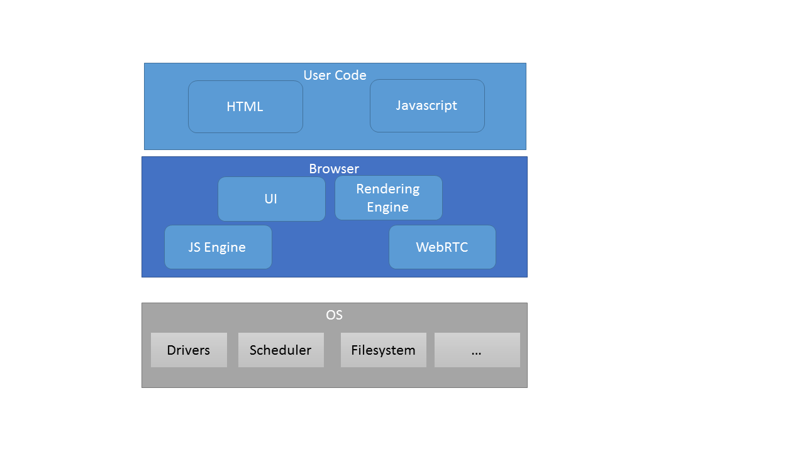
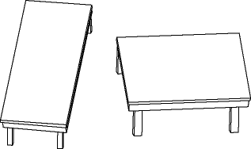
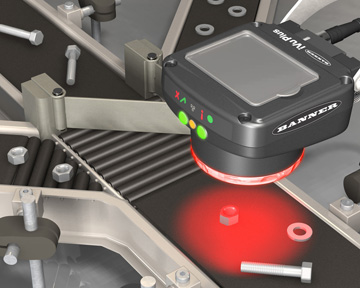
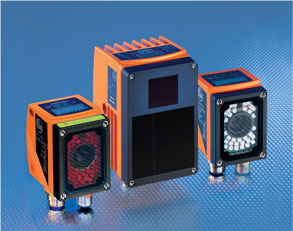
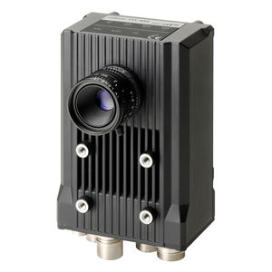
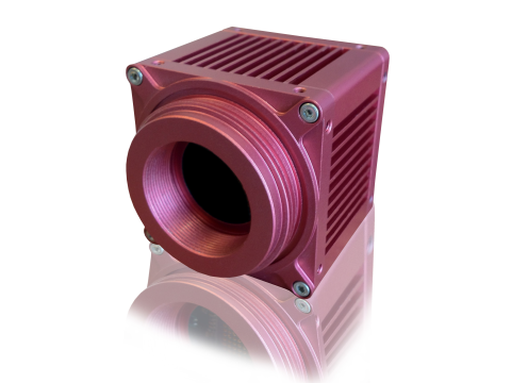

Adding to the Mess
The IoT Data Firehose and How to Stop Worrying About It
Klar Systems Private Limited
Harikrishna R (harik@klarsys.com)
Hi! The topic is a little over the top, right? Way over the top.
Well, my other choices were "Sensor Fusion and COnfusion" -- that
sounded too confusing. And the other one I had was "Dirty Data and
Why that's the only kind your're gonna get" -- too pessimistic.
"Adding to the mess" sounded more up beat in comparison.
[Switch to video mon]
[Poll here?]
[How many of you think IoT is over hyped?]
[- Can you all hold up your phones, please]
[How many of you think my topic today is over hyped?]
[Can all of you hold up you phone]
About Me
- Embedded Systems Engineer
- Audio System
- Also imaging, video, uC firmware...
- Fond of boxes with blinking lights
- Started a company to build a few
My name is Harikrishna. I'm an embedded systems engineer. My
background is in audio systems -- music, compression/decompression,
enhancement, that sort of thing -- but I've also done some imaging
stuff and a little bit of video analytics. In the last two years, I
have been running my own firm, Klar Systems, along with a two of my
friends and co-founders. We build IoT products, create frameworks for
IoT, and we're also helping Jigsaw Academy create an introductory
course on IoT.
Moore's Law
Image source: Wikipedia
In the years that I spent at Texas Instruments, for the most part, as
an APplications Engineer, I saw IoT evolve and take shape. What I saw
was chips get cheaper, more powerful and less power hungry with each
generation, following Moore's Law. Now, everyone has heard about
Moore's Law and people mostly imagined it as being
applicable to chips that power PCs and Laptop -- you know --
Intel, AMD and maybe other server class chips and super computers and so forth.
But that's not the only thing that was going on. When I started my
careed at Texas Instruments, they were already the world leaders in
Digital Signal Processors and the fastest one we had back then -- this
is the year 2000 -- ran at a 150 MHz and could do 2 32-bit MAC every
cycle. By 2006, these things were running at 1 GHz+ and doing 4
64-bit MAC MAC. So at at raw level, you'd gotten a 80 times speed up
in 6 years!
There is a point on this graph, maybe around 2000 at which mass
adoption of smartphones became inevitable. I mean we didn't know
about skype or instagram or whatapp -- we had no way to figure out
what people would do with all this compting power in their pocket. In
fact, most people who thought about it felt it would mostly be used by
business executive types -- who needed to go do a lot of meetings and
wouldn't want to lug a laptop. They were wrong. In two ways. Most
people buying smartphones are regular guys who want to browse and
whatsapp and play games. And business executives continue to lug
their laptops in and out of each meeting. Anyway my point is it was
not just Intel processors that got faster due to Moore's Law. It was
all processors. And when the processers that powered your phone passed
a certain threshold, those phones became smart phones.
Microcontrollers
... are everywhere!
Today that same process is making microcontrollerS faster and more
powerful. And microcontrollers are ever where. Already. Today.
They are in pretty much every equipment around you. From
refregirators, microwave ovens, dishwashers, washing machines,
elevators, gensets, weighing machines, electronic safes, ... I mean we
are surrounded by microcontrolers. FOr the most part, these have been
quiet workhorses -- substituting custom circuitry with more flexible
and cheaper programmable designs. And now microcontrollers are on the
verge of crossing a threshold in terms of their capabilities.
Ubiquitous Connectivity
The second trend driving IoT is connectivity. Broadband adoption, the
worldwide availability of 3G and 4G wireless data, cheaper, smarter,
networking equipment -- many of us are running home networks that are
more complex than what some small companies had 15-20 years back --
with routers, repeaters and bridges. And this is being augmented by
other wireless technologies from NFS and Bluetooth to LoRa and other
innvotive uses of the radio spectrum. Basically, there is a solution
at every feasible intersection of power vs bandwidth vs range. And
connectivity continues to become more cheaper and pervasive.
Sensors
The Internet of Things and Sensors and Actuators!
- Digitization
- Miniaturization and Modularization
- MEMS technology
Finally, you have sensors. To me this is hugely significant. Vint
Cerf, the “Father of the Internet,” called IoT the "internet of
sensors". And in a way, the central point of my talk today is about
this trend. This is actually a interlinked set of little noticed
trends. First: pretty much anything you may want to measure, can now
be measured digitally. Weight - now you have digital scales.
Temperature -- we have digital thermometers. Pressure, humidity --
same thing. And also for a a bunch of things we couldn't have meaured
before -- accelaration, proximity, pedometer, not to CMOS sensors for
imaging. Even the traditional sensors we have known -- mics, imaging
sensors, have gotten a lot smaller and a lot cheapers. This is made
possile by a variety of advances, mostly in semi-conductor
technologies -- things like MEMS. An average smarthone today has a
dozen sensors. And partly as a result - we'll consume more than one
and half a billion smartphones this year -- they have all gotten
cheaper. In some cases 100X cheaper in the last 10 years.
IoT: Why Now?
50 billion connected devices by 2020
28 billion connected devices by 2021
26 billion connected devices by 2020
Right now we're already at 15 billion connected devices.
So these things are all happening -- and you can look at these trends
and make the projections. It's quite easy. The 20 billion connected
devices that we're going to have is not so much unbelieveble as
inevitable.
[How many think IoT is going to be big "in the near future"?]
The problem is we have no way of knowing what these devices are going
to be doing. Anymore than someone could have foreseen the various uses
we find for our smartphones. And I think the reason most people think
that IoT is overhyped is because of this gap in our ability to forsee.
[How many think IoT is overhyped?]
I'm not saying IoT is not hyped. Of course it is -- and some very
crazy predictions are being made that will be way off the mark. But,
it hard to see that we'll stop here. The trends underlying this
phenomenon are secure.
Top-Down Prognoses
- "Smart" thingy: Toaster? Toilet? Teaspoon?
- "Connected" thingamajig: Car? Home? Cities?
- "Wearable" thingummy: Fitness? Tracking? Medical condition?
A lot of peopel to fill this gap in our understanding will often look
from the top-down. Look at some big problem we're facing -- I don't
know -- in health care or maybe smart cities or perhaps traditional
industries like retail - and try to see how these devies can be used
in that context. This is a valid approach -- but prolematic, Because
you can't be specific.
I don't mean to play the cynic hear. I'm just saying, these exercises
in imagination are good for developing your imagination. They are
unlikely to predict outcomes. How a society adopts a particular
technology is a complex non-linear path.
Instead, what I prefer to do is look at it from the bottom up. I look
at the the possibilities that are opeing up -- as they are opening up
-- and try and understand those technological capabilities that we can
bring to bear on a problem. i.e., focus on the toolkit, and when do
encounter a problem, you can pull out the most appropriat etool from
your tool kit.
Phone Vote Demo
And I prefer concrete examples to vague abstractions. So that's why I
did this demo (even though it doesn't work very well...). And I
thought: why don't I explain how this works.
If you get nothing else out of this workshop: you'll get at least a
sense of how this sort of problem can be approached. And hopefully it
adds to your tool kit. Maybe not directly, may be it does so by
leading you in some related directions... I don't know. In any case,
it gets you closer on the path of adding to this technological
progress, rather than merely watching or, worse, participating in the
hype cycle.
[So how many of you think that this is a complex algo?]
OK, so let's open the hood.
Under the Hood
Yeah it's actually quite simple. Six steps. Each one fairly basic.
Let's begin at the beginning. The camera I have here is a Logitech
[FIXME]. Megapixel webcam. Not very expensive -- not cheap stuff
either. About 1500 rupees or so. Hunt for a deal this Diwali -- I
hear our favorite online retail giants are gearing up for battle this
season -- you may get something like it under 1000, I think.
HD Image
| Columns | |||||||||||
|---|---|---|---|---|---|---|---|---|---|---|---|
| 0 | 1 | 2 | 3 | ... | 1278 | 1279 | |||||
| Rows | 0 | ... | |||||||||
| 1 | ... | ||||||||||
| 2 | ... | ||||||||||
| 3 | ... | ||||||||||
| ... | ... | ||||||||||
| 718 | ... | ||||||||||
| 719 | ... | ||||||||||
1280 columns * 720 rows → 921600 pixels/image
What this gives me is a 1280x720 image at upto 30 FPS, so called 720p video.
Now that sounds impressive. But those of you who are photograhy
enthusiasts or have tried to comparison shop for mid- to high-end
cameras, you guys would have figured out very quickky that image
quality is not about the pixel count. It depends of very many things
-- the optics, the size of the sensor, the type of image
stabilization, and so forth. And in the grand scheme of things, what
we have here is poor-man's HD image. I mean technically it is HD, but
that's about it.
So this is what we get: 1280 columns, 720 rows, and...
Pixel
| Pixel | ||
| R= | G= | B= |
921600 pixels/image × 24 bits/pixel → 2.6 MB
2.6 MB @ 30 frames/second → ~600 mbps [uncompressed]
...each pixel is a 24 bit number -- 8 bits each for the red, green and
blue planes. That's a total of 2.6 MB per uncomressed image. And at
30 FPS, we are looking at more than 600 mbps. HD video stream!
That's a large amount of data, but in practice, when streaming over
the network, we compress this stream. And compression ratios of 200
times is often possible with h.264, especially when you have low
motion video. So when you are streaming, it becomes 3-4 mbps.
100 cycles/pixel @ 30 fps → ~2.7 GHz
@ 3 fps → 270 MHz
(one frame every 333 ms)
But in our case, we want to be processing this whole image in its
uncompressed form. Just a few years ago this was an impossible torrent
of data. If were to spend say 100 cpu cycles per pixel -- and that's
not hard to do -- that won't take more than 10 lines of code in a high
level language -- you'll end up needing 2.7 GHz. You either need a
very powerful processor or some custom circuitry. Well, fortunately
for us, with video there's a very simple option. Just drop the frame
rate. If you were OK with processing this stream at 3 frames per
second, instead of 30 -- straightaway the CPU requirement drops 10
fold. But what that means is that you get only one image for 300 ms.
In other words, you need to hold you phone up for at least a third of
a second to make sure we get it. That's not hard -- most people will
hold it up for a few seconds.
Even a low-end platform -- say the raspberry pi -- which has a single
core ARM processor running at 800 MHz can handle this quite easily.
We are not using a RaspPi here - we'll come to our compute platform
later. Just wanted to give you a sense of the problem size.
Gray = 0.2989 × R + 0.5870 × G + 0.1140 × B
OK, so we have the image. What next. Well, we're not really
interested in a color image. We want to look for black phones. So
first thing we do, we convert it to a gray scale image. i.e., for 24
bits per pixel, it drops to 8 bits per pixel. And the process
involves a straightforward weighter sum of the RG abd B values. The 8
bit alue we have goes from 0 to 255. 0 is perfect dark and 255 is
perfect bright.
Output = 1, if above threshold; 0, otherwise
Second, we want to threshold this image. In other words make it a
binary black and white image. Remember, we are interested only in the
black portions. Now, there's a problem here. If we looked only for
perfectly black pixels, we won't find many. [Explain why]. So we
need to have a threshold, some number, below which we decide a pixel
is black.
Let's try that [process of tuning]. So we have a problem.
Hyteresis Thresholding
Set and tune two thresholds: high and low
- Pixels below low are marked 0 (black)
- Pixels above high are marked 255 (not black)
- Pixels between low and high are
- Marked 0 if any one of their neighbours is 0
- Marked 255 otherwise
Needs to be implemented recursively or over multiple passes. Somewhat expensive.
So to get past this we use a technique called hyteresis thresholding.
Hyteresis refers to a stateful process in which the output lags behind
the input. In the context of image processing, the way this works is,
we have two thresholds. One high, one low. So what we're saying is,
everything below the low threshold is definitely black. Everything
above the high threshold is definitely not black. For pixels with a
value in between -- they are considered black provided they have at
least one black neighbour.
Hyteresis Thresholding
Pass:
OK, so think about this. You start with an image and mark all the
pixels. You get a bunch of black, a bunch of not blacks, and then a
bunch of question marks. Pixels that lie between the threshold. You
then grow the black regions by encompassing all the questionable
pixels nearby in a progressive manner. This is a recursive process.
This is a special case of a problem that arises frequently in what is
generally called image segmentation. Whenever you have a picture that
you want to break up into different regions or objects. There are
multiple different ways to go about this, but I just took a brute
force approach here.
So with this we get two thresholds to tweak and a little bit of
tweaking lets us get to a just right number.
Find Regions
- Find regions of interest
- Eliminate based on size
- Eliminate based on aspect ratio
- Eliminate boxes that are part of the background
Next we can find our regions of interest from this binary image. I
used a library called tracking.js do this. Tracking.js returns a
list of black boxes it found in the image. We look at each nox and
eliminate candidates based on size and aspect ratio.
Finally, we ignore regions that are permanently black. You know,
things that are part of the background. More enhancements are
possible: by this point it is all just logic on the list of boxes you
have. You can smothen the counts. Eliminate spurious boxes (those
that don't show up for more than 1 or 2 frames). And so on.
Well. That's all there is to it. [So how many still find this too
complex?]
Right, it does not take a Ph D or a big team to put togather something
like this. Well, if you did have a lot of Ph. D. working for you, you
could definitely do a much, much better job. For one thing, I wouldn't
have had to ask you to raise your phone. I could just asked you to
raise you hands and done gesture recognition.
Gesture Recognition

XKCD: http://xkcd.com/1425/
That's possible today, but requires more than just an ad hoc approach
we used here. We would have needed machine learning. Now keep in
mind, it is not necessarily more complex in terms of computation.
Just harder to conceptualize, design, configure and make into a
working systme. Actually much much much more harder...
Demo Platform

And here's the best part about this demo.
I'm doing this whole thing inside a browser. That's right! It is
100% javascript code. You know, a few years back, I'd have been
embarrased to say I was coding in javascript. And the idea that you
could do HD video processing in JS would have sounded hilariously
absurd. Yet, here we are.
The story of how JS moved from a toy language used to control
dropdown menus to one where a significant amount of backend code is
being done with it, would fill a talk by itself. In short, it is
about a bunch of companies --chiefly google, but also yahoo, Apple -
who came togather with the opensource community to supercharge open
web technologies. And the thing that really flipped the switch for JS
was Google's V8 engine. A superfast "engine" for JS. They made it
when they launched their chrome browser. They wanted to make
interactive web applications faster. But since that time, V8 has gone
everywhere. It been used in the chromimum browser, of course,
databases such as mongoDB and couchbase, and most importantly in
Nodejs, which is now, in many ways, the fastest growing backend
technology for web apps. Anyhow, the point is we've gotten to a stage
where we can do credible amounts of processing, even HD video
processing, right inside a browser -- on the client side.
IoT Data Firehose
Combining cheap sensors, microcontrollers, and connectivity will:
- Unlock a treasure trove of data
- Provide data that is unlike what we see today
Anyhow, back to the topic at hand. IoT technologies can help us
extract data from the real world in contexts and quantities that we do
not corrently expect. I mean, think about it: when you say big data
today, you're mostly dealing with data that arises inside of computer
sustems. You know, click streams, transations. I don't mean to say
there are not other sources of data. But with IoT you have this
possibility where a great deal of the information you have around you,
can be digitized and processed.
Sensor Use and Abuse

By en:User:Cburnett - Own workThis vector image was created with Inkscape., CC BY-SA 3.0, https://commons.wikimedia.org/w/index.php?curid=1496858
{kind=link}
Now, keep in my we used a CMOS sensor for this demo. A CMOS imaging
sensor is developed with a very specific applications in mind.
Photography and videography. Still images and video. They are meant
to mimic human visual perception. They are meant to plug in as input
to the awesome human vision system. Everything about this webcam is
designed with the ultimate human consumption of the image in mind.
The pixels are designed with specific sensitivities, and placed in a
so called Bayer array. The scan speed is tuned to play well ith human
persistence of vision and so forth. But human vision is nothing like
computer vision.
Human vs Computer Vision
Source: https://www.rit.edu
We do a lot of processing in our brain, a lot of extrapolation from
context that gives us meaning from whatever raw data it is our retina
is getting from the outside world. I'm sure you've all seen multiple
illusions that help convince of it. This one is my favorite. No
matter how hard you look at it you can't tell they are the same size
right?
So my point is given that computer vision is not the same as human
vision, would we be better off using a sensor tuned for making
computer vision tasks easier? Instead of relying on a sensor designed
to show pretty pictures to human eyes?
Vision Sensors
   
http://www.stemmer-imaging.co.uk/en/products/category/3d-laser-scanning-sensor/
https://industrial.omron.us/en/products/vision-sensors-systems
http://showcase.designnews.com/content/ivu-plus-touch-screen-vision-sensors
http://www.ifm.com/ifmus/web/application-story-vision.htm
Yes! The answer is a definte yes!. You have IR sensors, xray sensors,
scanning sensors, all manner of stuff. But, these sensor are useless
for applicaitons outside of CV -- they are not good for taking a
selfie -- so no mass market -- which means they are very,very
expensive. Which is why most current research focuses on doing CV
using regular CMOS sensors.
And you can find many instances of such innvotive uses of existing
sensors. Such a regular mic being used t monitor[more examples FIXME]
Traffic Sensors
Image Source: U.S. Dept. of Transportation
Let's talk about traffic sensors for a minute. The main application
of these things is to help guage the amount of traffic, and the speed
of its movement thru secotions of the highway. And this is how it
looks.
Sensor Fusion
- Combine data from multiple sensors
- Sensors are of different types; have different failure scenarious
- Errors from sensors are uncorrelated
e.g., Self-driving cars use CMOS + Lidar + Radar + Ultrasonic + Infrared + ...
So what can we do about the noise -- without increasing the cost of
the system. Well we can use input from another sensor. I could have
used another camera, matbe placed half way up the aisle for example,
Or I can use some othe rdata point to validata this one. For example I
have this device here.
Or, I can use some other sensor. Ideally, something that has an error
rate uncorrelated with the this one error rate. This is sometimes
called sensor fusion. The most famous use of it is in driverless cars
-- which combine cmos, lidar, radar and IR. Each of these sensors by
themselves have catastrophic error rates. Put them all togather and
you have reasonable chance of avoiding disaster scenaroijs.
This is a regular wi-fi router. But it is running custom firmware.
And it is able to tell me how many phones are there in this room.
Well not quite. It gives me a list of unique MAC addresses. [explain]
Accuracy vs. Availability
Time to summarize. It's wiser to seek patterns in approximate data
than to seek perfect data. Smarter to build applciations on top of
the data you have rather than design it around teh data that you
really want. The urge to seek perfect data is actually quite
dangerous. I mean, think about what would happen if we were to go
about the traffic monitoring the same way that the US did. Th eevel
of investment and the waste of resources... And just seeking a
cheaper sensor is not an answer. Even if you make it 10X cheaper,
you'd be paying $100s per intersection instead of $1000s. That's all.
Still very expensive. And won't buy you much. This lesson is
important in teh context of everything we are trying to do today for
smart cities and so forth.
But I'm not here to make policy recommendations. My purpose today was
to help motivate some lateral thinking on data accuracy vs data
availability. If you think about it, availability is preferable to
accuracy almost every time. Almost every time.
Fitbit
I was one of the early buyers of fitbit. Not because I had any
intention of wanting to lead a healthy life style. But it was cool
technology. This is a perfect example of what I'm talking about here.
I think they adapted an accelerometer that was first used in
Nintendo's Wii remote, and subsequently in many phones. And then
repurposed it to count steps. And since then it, and the device
category itself have come a long way. Yet to this date, if you look at
amazon reviews of fit bit, or for that matter any other pedometer,
accuracy is still a major concern. OK, accuracy here is not about
whether it is within 1% or within 10% of the actual number of steps
you took. I remember once wearing it on a long drive to Chennai. I
was just driving a car right? The fit bit thought I had done
something like 5 or 6000 steps in the space of that 6 hour drive.
They have since added more sensors that try to detect if you are in a
moving vehicle and then correct for it and so on. This is a tough
problem and things have gotten better over time.
What I find heartwarming is that an entre new product category was
launched on the back of some poor data from sensors designed for use
in a completely different context, and it has helped millions of
people around the world. And I hope you'll agree with me that this
neededn't be the last such device. There are many possibilities
around us. Thanks you.
Source Code
- Github: https://github.com/klarsys/reel-poll
- Acknowledgements
- Tracking.js: https://trackingjs.com/
- Impress.js: https://github.com/impress/impress.js
- Angular: https://angularjs.org
- DD-WRT: http://www.dd-wrt.com/site/index